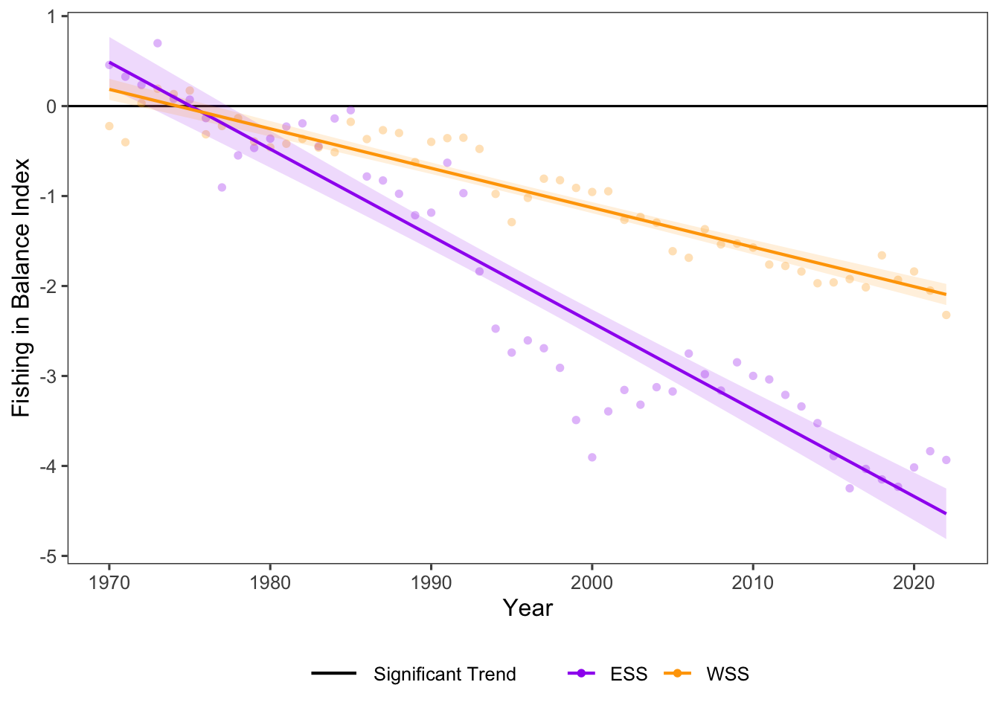

23 Resource Potential: Fishing Strategies and System Productivity – Fishing in Balance
Data Type: Tabular Data (within eco_indicators)
Spatial Scope: Maritimes
Duration 1970-2022
Source: Bundy et al. 2017
23.1 Introduction to Indicator
Fishing in Balance describes how “balanced” a fishery is in ecological terms, relating fisheries catches and the trophic level of catches with the transfer efficiency of the community in relation to some baseline year (here, 1968-1970) (Bundy, Gomez, and Cook 2017; Pauly, Christensen, and Walters 2000). Fishing in balance captures the impact of fishing on system productivity.
Positive trends in Fishing in Balance indicate that a fishery is expanding, that bottom-up effects are occurring in the community, or that catches are higher than expected. Alternatively, negative fishing in balance trends suggest a deterioration of underlying food webs, that fishing pressure is impacting ecosystem function, or that a system is less productive as a result of fishing activity (Cury et al. 2005; Bundy, Gomez, and Cook 2017).
23.2 View Data
library(tidyr)
library(plotly)
library(stringr)
plotly_df <- data@data %>% inner_join(global_cols3)
p <- plot_ly()
regions <- unique(plotly_df$region)
for(r in regions){
df_sub <- plotly_df %>% filter(region == r)
group_name <- unique(df_sub$region_group)
linewidth <- unique(df_sub$linewidth)
linetype <- unique(df_sub$linetype)
p <- p %>%
add_lines(
data = df_sub,
x = ~year,
y = ~FishinginBalance_value,
name = r,
legendgroup = group_name,
legendgrouptitle = list(text =
ifelse(group_name == "ESS",
"Eastern Scotian Shelf Zones",
"Western Scotian Shelf Zones"
)
),
line = list(color = unique(df_sub$color),
dash = linetype,
width = linewidth),
text = ~paste0("<b>",region,"</b>: ",round(FishinginBalance_value,2),"°C"),
hoverinfo = "x+text"
)
}
p %>%
layout(
title = "Fishing Strategies and System Productivity",
xaxis = list(title = "Year"),
yaxis = list(title = "Fishing in Balance Index", fixedrange = TRUE),
hovermode = "x unified",
legend = list(
tracegroupgap = 5,
groupclick = "toggleitem",
itemdoubleclick = FALSE
)
) %>%
config(displayModeBar = FALSE)Figure 23.1: Fishing in Balance for all NAFO regions and Scotian Shelf regions overall. Use dropdown menu to select indicator, and click legend to toggle regions.
23.3 Summary and Trends
Trend and summary values are automatically generated; data were last updated on marea package install on 2026-02-10
Within NAFO divisions in the Scotian Shelf, trends in Fishing in Balance were fairly consistent and showed general decreases across time (Fig. 23.1).
Fishing in Balance significantly decreased in the Western Scotian Shelf and significantly decreased in the Eastern Scotian Shelf, both with signficant trends (Fig. 23.2) .

Figure 23.2: Top of the Food Web trends for ESS and WSS
23.3.1 Summary Table by NAFO Region and Structural Change Variable
Trends of Fishing in Balance for each NAFO region within the Eastern and Western Scotian Shelf (1970-2022) are shown below (Table 23.1).
| variable | Eastern Scotian Shelf Trends | Western Scotian Shelf Trends |
|---|---|---|
| Fishing in Balance |
4VN: -1.05e-01 ∗ 4VS: -1.10e-01 ∗ 4W: -7.47e-02 ∗ ESS: -9.65e-02 ∗ |
4X: -4.39e-02 ∗ WSS: -4.39e-02 ∗ |
23.4 Relevance to Research and Stock Assessments
Decreases in Fishing in Balance detected here are consistent with previously reported trends in the Northwest Atlantic since the 1970s (Pauly, Christensen, and Walters 2000). Consistent decreases in the Fishing in Balance Index through time suggest that fishing pressure has negatively affected ecosystem productivity in the Scotian Shelf region (Bundy, Gomez, and Cook 2017).
23.5 Variable Definitions
| variable | description | unit |
|---|---|---|
| year | Year of trawl survey | |
| region | Region over which values are summarized | |
| FishinginBalance_value | Fishing in Balance Index |